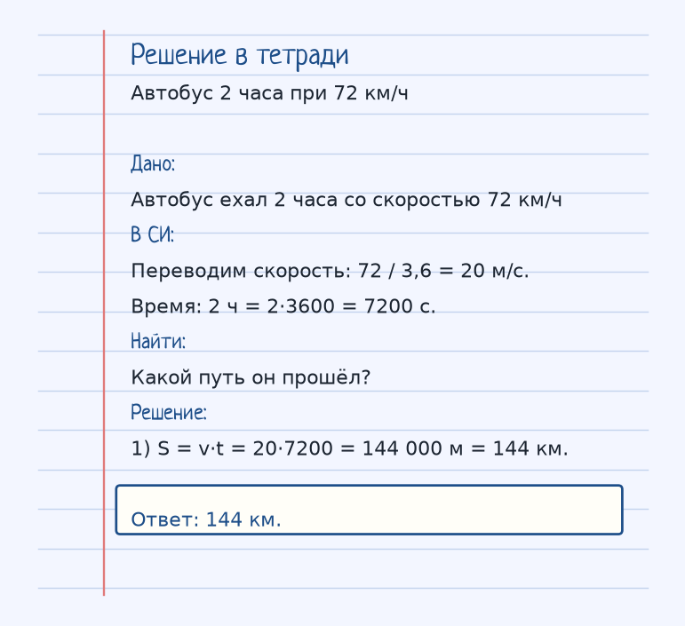
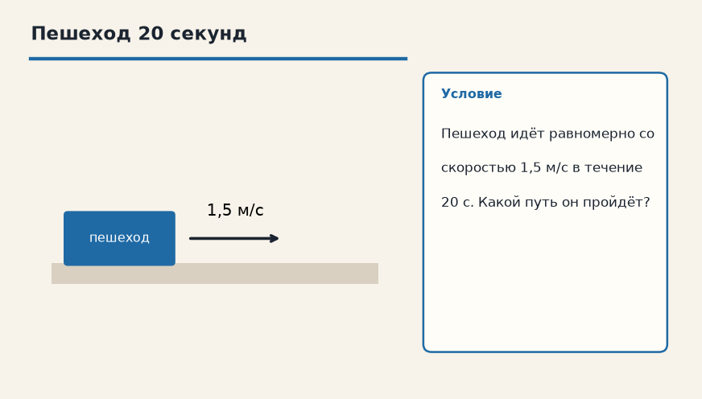
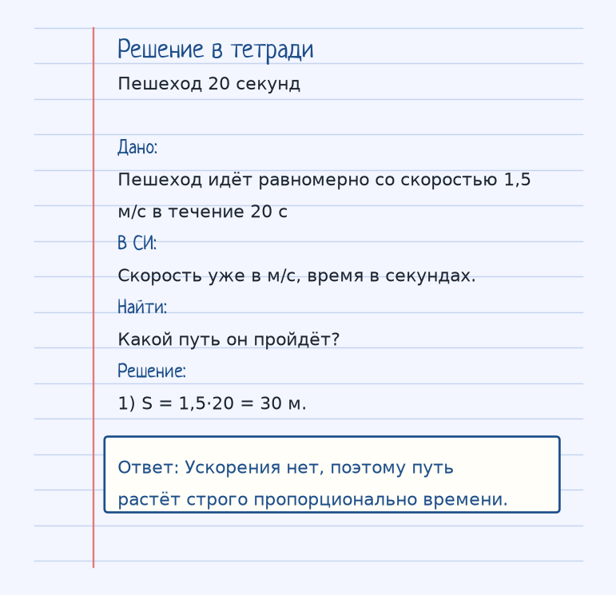

Тема «Равномерное движение»: физический смысл, единицы величин, типичные ошибки и два разобранных примера.
Схема к условию.
Физический смысл
Движение с постоянной скоростью по прямой. Перемещение прямо пропорционально времени. Ускорения нет (a = 0).
Равномерным движение делают два условия сразу: скорость не меняется по величине и путь лежит на прямой. Раз ускорения нет, a = 0, и за каждую следующую секунду тело прибавляет к пути ровно столько же метров, сколько за предыдущую.
Формулу S = v·t читают так: путь — это скорость, повторённая t раз. Если скорость дали в км/ч, а время хочется в секундах, сначала переводят в м/с делением на 3,6 — как в задаче про автобус: 72 км/ч = 20 м/с. Два часа — это 2·3600 = 7200 с, и только после этого подставляют в формулу.
Перемещение здесь совпадает с путём, потому что траектория прямая и тело не разворачивается. Как только скорость начнёт расти или падать, формулы равномерного движения уже не подходят, нужно равноускоренное.
Формула и единицы
S = v · t
S — путь (м), v — скорость (м/с), t — время (с).
S — путь (м), v — постоянная скорость (м/с), t — время (с). a = 0.
Пояснение
При скорости 25 м/с за 1 с проходится 25 м, за 10 с — 250 м. Путь пропорционален времени.
Если скорость постоянна, равные промежутки времени дают равные пути.
Типичные ошибки
Нельзя подставлять километры в час и секунды в одну формулу, не переведя единицы. И не называй равномерным разгон «почти с постоянной скоростью».
Разобранные примеры. Решение каждого открывается отдельно.
Разбор 1
Автобус 2 часа при 72 км/ч
Автобус ехал 2 часа со скоростью 72 км/ч. Какой путь он прошёл?
На схеме только условие.
Порядок записи: данные, единицы СИ, искомая величина, ход решения, ответ.
Дано. Автобус ехал 2 часа со скоростью 72 км/ч
В СИ.
Переводим скорость: 72 / 3,6 = 20 м/с.
Время: 2 ч = 2·3600 = 7200 с.
Найти. Какой путь он прошёл?
Решение.
S = v·t = 20·7200 = 144 000 м = 144 км.
144 км.

Разбор 2
Пешеход 20 секунд
Пешеход идёт равномерно со скоростью 1,5 м/с в течение 20 с. Какой путь он пройдёт?

На схеме только условие.
Порядок записи: данные, единицы СИ, искомая величина, ход решения, ответ.
Дано. Пешеход идёт равномерно со скоростью 1,5 м/с в течение 20 с
В СИ.
Скорость уже в м/с, время в секундах.
Найти. Какой путь он пройдёт?
Решение.
S = 1,5·20 = 30 м.
Ускорения нет, поэтому путь растёт строго пропорционально времени.

Разбор 3
12 м/с и 25 с
Тело движется равномерно со скоростью 12 м/с в течение 25 с. Какой путь оно пройдёт?
На схеме только условие.
Порядок записи: данные, единицы СИ, искомая величина, ход решения, ответ.
Дано. v = 12 м/с, t = 25 с
В СИ.
Величины уже в СИ.
Найти. S
Решение.
S = v·t = 12·25 = 300 м.
300 м.
Разбор 4
54 км/ч за 40 с
Автомобиль едет со скоростью 54 км/ч. Какой путь он пройдёт за 40 с?
На схеме только условие.
Порядок записи: данные, единицы СИ, искомая величина, ход решения, ответ.
Дано. v = 54 км/ч, t = 40 с
В СИ.
54 / 3,6 = 15 м/с.
Время уже в секундах.
Найти. S
Решение.
S = 15·40 = 600 м.
600 м.
Разбор 5
Путь 2,4 км
Поезд идёт равномерно со скоростью 20 м/с и проходит 2,4 км. Сколько времени это занимает?
На схеме только условие.
Порядок записи: данные, единицы СИ, искомая величина, ход решения, ответ.
Дано. v = 20 м/с, S = 2,4 км
В СИ.
2,4 км = 2400 м.
Найти. t
Решение.
t = S/v = 2400/20 = 120 с.
120 с.
Разбор 6
Три минуты
Лыжник движется со скоростью 5 м/с в течение 3 мин. Найдите путь.
На схеме только условие.
Порядок записи: данные, единицы СИ, искомая величина, ход решения, ответ.
Дано. v = 5 м/с, t = 3 мин
В СИ.
3 мин = 180 с.
Найти. S
Решение.
S = 5·180 = 900 м.
900 м.
Разбор 7
Скорость по пути
За 90 с тело прошло 900 м равномерно и прямолинейно. Найдите скорость.
На схеме только условие.
Порядок записи: данные, единицы СИ, искомая величина, ход решения, ответ.